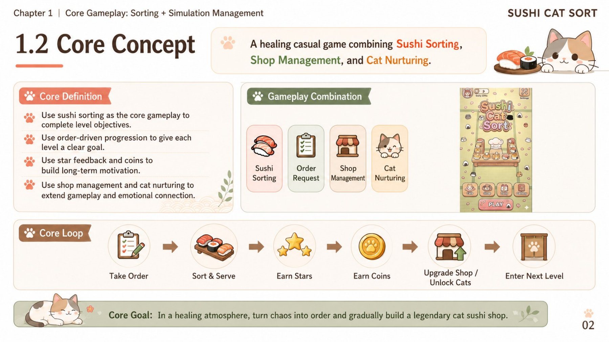

腾讯 × 港大联合项目
把寿司分好，
把小店养大。
Sushi Cat Sort 是一款融合排序解谜与养成元素的猫咪主题休闲游戏。本页汇集试玩版本、策划方案、市场调研与广告样片。
产品策划 / 商业化设计

01 / PLAY
先玩一局。
在 itch.io 打开即可试玩，无需下载。
- 类型
- Sort 排序解谜 + 养成
- 主题
- 猫咪、寿司与小店
- 平台
- HTML5 浏览器试玩
建议使用电脑浏览器体验。
02 / PROJECT DOCUMENTS
从市场判断到产品方案。
直接翻页浏览，也可以打开完整 PDF。
玩法与系统设计、UI/UX、IAA / IAP 商业化、发行规划及广告创意流程。
打开完整 PDF ↗材料中的营收、ROI、留存等商业化数字包含目标、预测与模型假设，应结合原文语境阅读。页面不将其表述为已实现的运营成果。